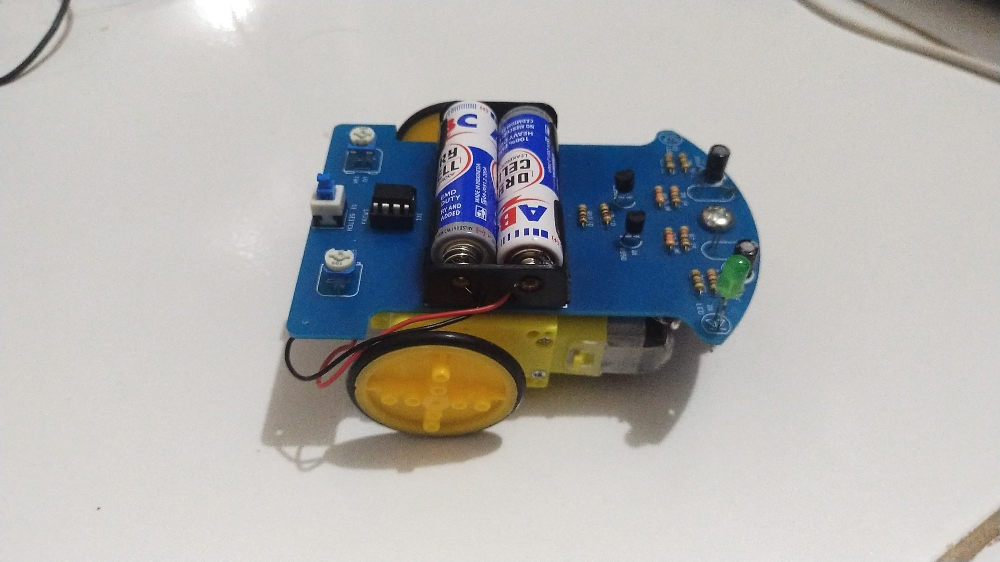
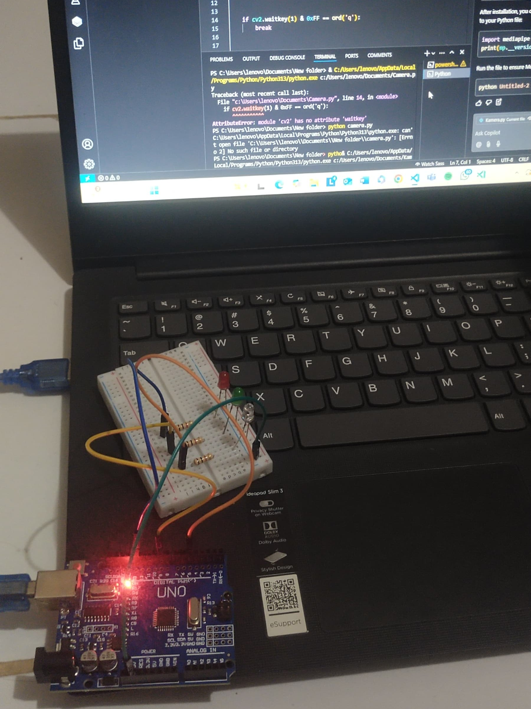
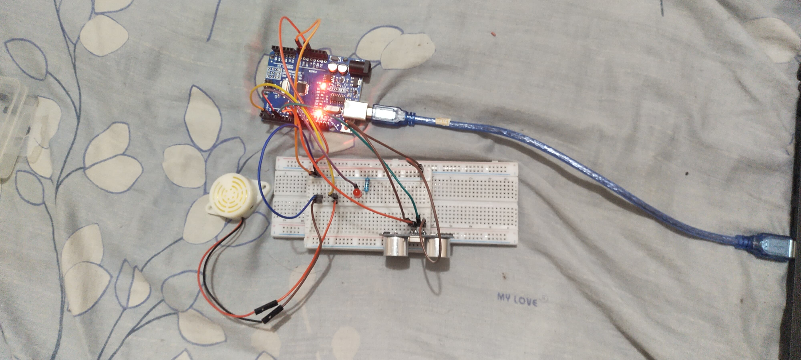

Galeri Proyek
Berikut adalah beberapa tangkapan layar dari proses pembuatan dan hasil akhir proyek.

Lampu Otomatis dengan Sensor Cahaya

Robot Line Follower Tanpa Arduino

Lampu Otomatis dengan Sensor Jari Menggunakan OpenCV dan MediaPipe

Arduino Radar dengan Buzzer dan LED